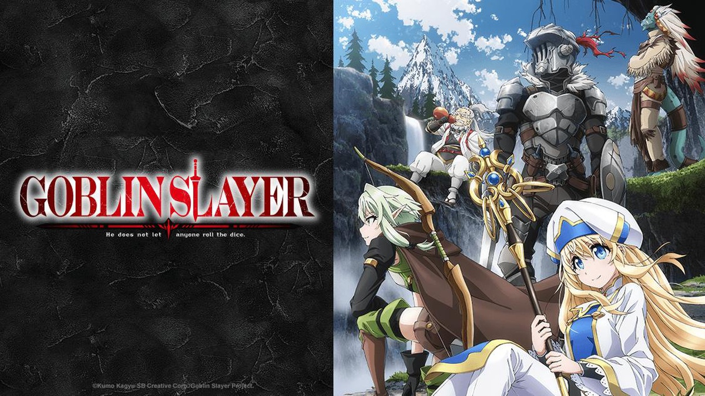

Seinen
El término "seinen" se refiere a los animes y mangas destinados a un público adulto masculino. Estos animes a menudo presentan temas maduros y complejos como la política, la violencia, el erotismo y la psicología, y suelen ser más oscuros y serios que los shounen. Ejemplos populares de seinen son "Attack on Titan", "Death Note", "Berserk" y "Goblin Slayer".
Goblin Slayer
"Goblin Slayer" es un anime de fantasía oscura que sigue a un aventurero conocido como Goblin Slayer, que es conocido por ser un exterminador de goblins. Los goblins son criaturas consideradas como las más débiles y menos peligrosas de la región, pero también son conocidos por ser crueles y sádicos en sus ataques a los humanos.
El personaje principal es un guerrero solitario y reservado, que siempre se encuentra en busca de goblins para matar. A pesar de su aparente falta de habilidades sociales, es un estratega y luchador experto, y su destreza en la lucha contra los goblins es incomparable. En su lucha contra los goblins, se une a otros aventureros, cada uno con habilidades y personalidades únicas, para enfrentar desafíos cada vez mayores.
La serie es conocida por su violencia explícita y su representación realista de las batallas. "Goblin Slayer" es una historia que explora temas como la venganza, el trauma y la justicia, y está dirigida a una audiencia madura que disfruta de la fantasía oscura y la acción intensa.
"Goblin Slayer" es un anime basado en una serie de novelas ligeras japonesas escritas por Kumo Kagyu e ilustradas por Noboru Kannatsuki. La serie de novelas ligeras se publicó por primera vez en 2012 y se convirtió en un éxito inmediato, lo que llevó a una adaptación de manga y posteriormente a una adaptación de anime.
La adaptación de manga fue ilustrada por Kousuke Kurose y comenzó a serializarse en la revista "Young Gangan" de Square Enix en febrero de 2016. La serie de anime fue producida por el estudio White Fox y se emitió por primera vez en Japón en octubre de 2018.